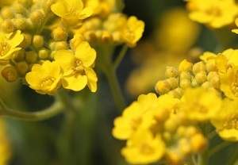

Allt är inte guld som glimmar!
Guld (latinskt namn Aurum, i talspråk gull) är ett grundämne som tillhör gruppen ädelmetaller och gruppen myntmetaller samt är ett mineral. Guld har den kemiska beteckningen Au som kommer av aurum, det latinska ordet för guld. Det är en eftertraktad metall vilken under århundraden har använts som betalningsmedel, som värdebeständig tillgång, som smycken, för påkostad utsmyckning och beständigt blanka ytor. Metallen finns som korn och klumpar i berggrunden, i underjordiska ådror och i guldrik alluvialjord.
Guld är kompakt, mjukt, glänsande och den mest formbara och kemiskt tåliga av alla kända metaller. Rent guld har en klart gul färg som traditionellt har ansetts tilltalande, men är så mjukt att det ensamt knappast duger till någon teknisk användning. Hårdheten kan dock ökas genom legering med mindre mängder av andra metaller och guldet blir då användbart i många sammanhang. Smyckesguld är oftast 18 karat och i Sverige vanligen 75 % guld, 16-17 % koppar och 8-9 % silver. Smyckesguld förekommer i ett flertal färger, som färgat guld.
Guldets speciella egenskaper och sällsynthet har gjort det eftertraktat och högt värderat. Därför har guld i sig fungerat som betalningsmedel sedan urminnes tider och använts till mynt. Guldföremål över 1 g brukar märkas med lagreglerad kontrollstämpel som ska garantera finhet i karat eller promille samt ange tillverkare. Sedan 1999 ska legeringen innehålla minst 9 karat (375) för att få kallas äkta guld.